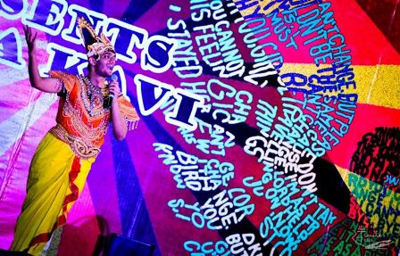
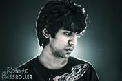
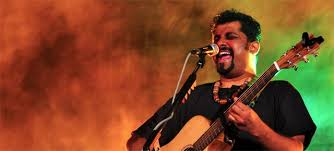
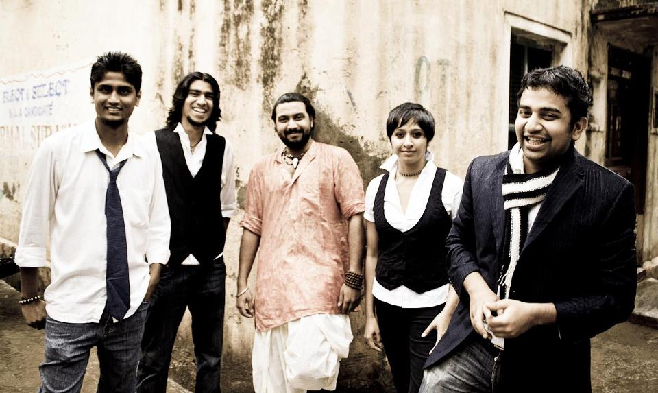

-
Theme Night


> Inaugurals:A night of fun, celebration and enjoyment.Come and watch scintillating performances by students of IIIT Hyderabad. Performances include folk dances, bollywood, bhangra, Skit etc.
> Performance by HCU:Come and watch an authentic Manipuri Dance performed by students of the North Eastern Group, HCU.
> War of DJs:Watch DJ Ronnie Bassroller battle it out with DJ Ballu as they aim to establish their supremacy in the grounds of Felicity and try to win the crowd over with their impeccable music.Inaugurals and DJ night!
-
Western Night

> Bob Dylan, Jim Morrison, Jimi Hendrix, Led Zeppelin, Pink Floyd,AC/DC - which legend do you follow? Metal/ Alternative/ New age rock- what is it that has you screaming for more? Calling all ye metal-heads to congregate and witness the most electrifying competition in the city comprising power packed gigs with larynx-shredding vocals, mammoth power-chord roars and a lumbering arena inducing adrenalin rushes and encores. Be it grunge, heavy metal, psychedelic, alternative, punk, or indie rock, we'll have it all so be there and brace yourself for an unforgettable nite of rock.
> Kryptos is a heavy metal band from Bangalore, India, formed in 1998 by Nolan Lewis (vocals/guitars) and Ganesh Krishnaswamy (ex- Vocalist/bassist)in 1998. They are essentially a classic heavy metal band fused with elements of 1980's thrash metal, such as the high-velocity riffs and suitably gruff vocals.With Kryptos
-
>Pro Night


> Often hailed as India’s biggest cultural & musical export, Raghu Dixit’s unique brand of infectious, happy music transcends age, genre, and even language. His music is strongly rooted in Indian traditions and culture and is presented with a very contemporary, global sound. Here is Link for Event Details
> Lagori is an eclectic group of musicians with varied musical influences, who have come together to dish out foot tapping, soul stirring music. Although it draws influences from the flavor of each musician - ranging from Hindustani, Soul, Funk, Rock, Blues and Metal, the end result is a unique sound which at the same time has a tinge of familiarity to it.
With Raghu Dixit, Lagori & Much More